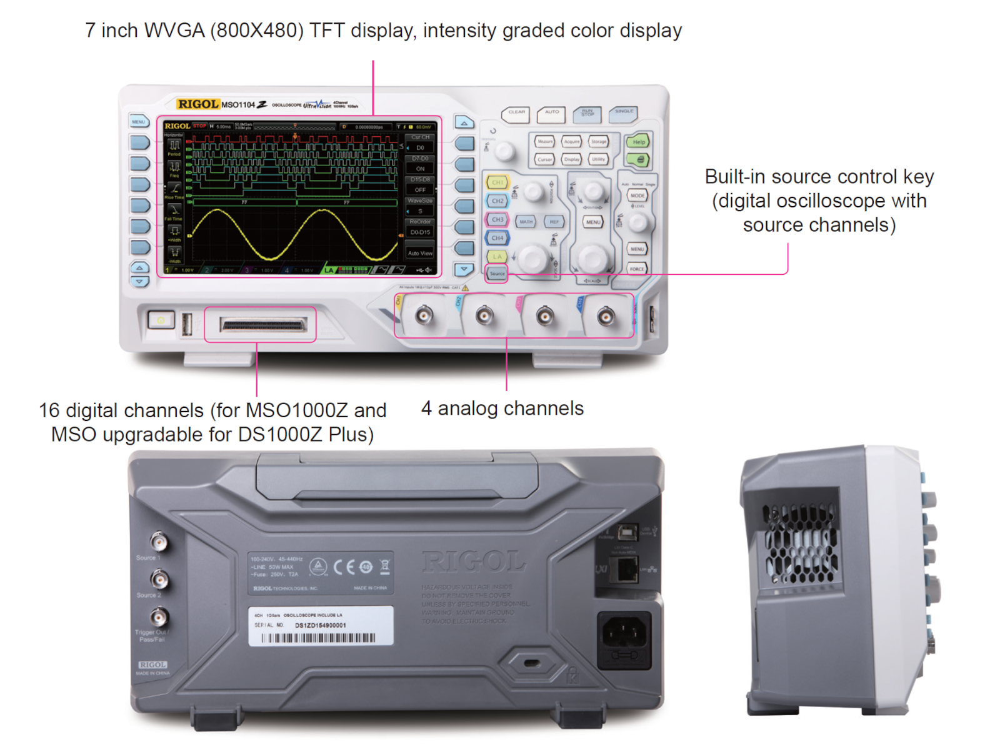
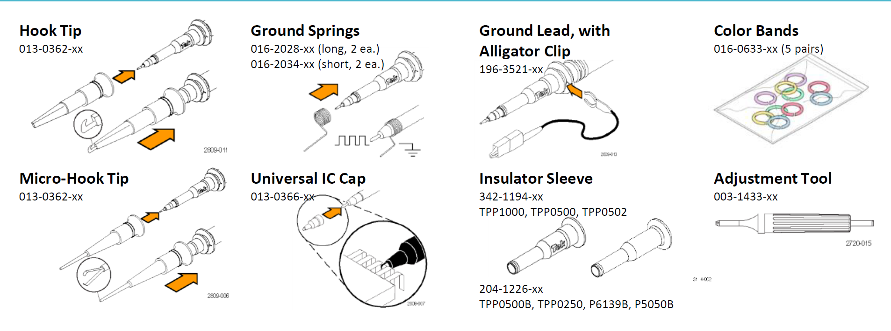

สิ่งที่ควรรู้เกี่ยวกับออสซิลโลสโคป#
Keywords: Oscilloscopes, Digital Storage Oscilloscopes, Mixed-Signal Oscilloscopes
▷ ออสซิลโลสโคป (Oscilloscope)#
“ออสซิลโลสโคป” (หรือเรียกว่า “สโคป”) เป็นเครื่องมือทดสอบ-วัดสัญญาณทางไฟฟ้า (Test & Measurement Instruments) ที่มีความสำคัญสำหรับงานด้านวิศวกรรมไฟฟ้า-อิเล็กทรอนิกส์และคอมพิวเตอร์ เหมาะสำหรับการนำมาใช้ในการตรวจสอบและวิเคราะห์สัญญาณไฟฟ้าในวงจรอิเล็กทรอนิกส์ โดยเชื่อมต่อเข้าทางสายวัด หรือ “โพรบ” (Measurement Probe) สำหรับแต่ละช่องอินพุต เพื่อดูการเปลี่ยนแปลงของแรงดันไฟฟ้าในเชิงเวลาของสัญญาณอินพุต สโปคจะแสดงรูปคลื่นสัญญาณบนหน้าจอแสดงผล โดยให้แนวนอนเป็นช่วงเวลาและแนวตั้งเป็นแรงดันไฟฟ้าที่ได้จากการวัด (ในโหมดการทำงานที่เรียกว่า Y-T Mode)
ตัวอย่างรายชื่อผู้ผลิตเครื่องออสซิลโลสโคป ได้แก่
- Keysight (Agilent Technologies)
- Tektronix
- Rohde & Schwarz
- LeCroy
- Rigol
- GW Instek
- Yokogawa
- National Instruments (NI)
- Fluke
- Hantek
เครื่องออสซิลโลสโคป แบ่งได้เป็นสองประเภทหลัก คือ ออสซิลโลสโคปแบบแอนะล็อก (Analog Oscilloscope) และ ออสซิลโลสโคปแบบดิจิทัล (Digital Oscilloscope)
- ออสซิลโลสโคปดิจิทัลมีความทันสมัยกว่าแบบแอนะล็อก และมีฟังก์ชันการทำงานหลายรูปแบบมากกว่าออสซิลโลสโคปแบบแอนะล็อก เนื่องจากวงจรภายในมีระบบคอมพิวเตอร์ฝังตัว มีชิปตัวประมวลผล หน่วยความจำ และเฟิร์มแวร์ ทำงานร่วมกับชิปและวงจรอิเล็กทรอนิกส์อีกหลายส่วนที่อยู่ภายใน และมีจอภาพแบบ LCD (Liquid-Crystal Display) แทนที่การใช้จอภาพแบบ CRT (Cathode-Ray Tube)
- เครื่องออสซิลโลสโคปดิจิทัล มีวงจรที่ทำหน้าที่วัดระดับแรงดันไฟฟ้าของสัญญาณอินพุตแต่ละช่อง (โดยทั่วไป มีช่องอินพุต 2 ช่อง หรือมากกว่า) แล้วแปลงให้เป็นข้อมูลดิจิทัล (Signal Digitization) บันทึกลงในหน่วยความจำภายใน และนำไปแสดงผลบนจอภาพ ดังนั้นจึงเรียกประเภทของสโคปที่ทำงานได้ในลักษณะนี้ว่า Digital Storage Oscilloscope (DSO)
สัญญาณอินพุตที่นำมาวัดและตรวจสอบด้วยเครื่องออสซิลโลสโคป จำแนกได้ดังนี้
- สัญญาณแบบแอนะล็อก (Analog Signals) และ สัญญาณดิจิทัล (Digital Signals)
- สัญญาณที่มีคาบ (Periodic Signals) หรือ ไม่เป็นคาบ (Aperiodic Signals)
สัญญาณแบบแอนะล็อก เป็นสัญญาณไฟฟ้าแบบ DC หรือ AC และมีช่วงแรงดันไฟฟ้าเป็นบวกหรือลบได้ แต่ถ้าเป็นสัญญาณแบบดิจิทัล (เช่น สำหรับวงจรที่ใช้ไอซีลอจิกในตระกูล CMOS หรือ TTL) จะเป็นแรงดันไฟฟ้าแบบ DC และมีแรงดันไฟฟ้าอยู่ในช่วงที่เป็นบวก เช่น ตั้งแต่ 0V จนถึงแรงดันไฟเลี้ยง VCC เช่น 3.3V หรือ 5V เป็นต้น นอกจากนั้นยังมีการกำหนดช่วงของแรงดันไฟฟ้าเป็นสองช่วง ช่วงใกล้ 0V หมายถึง ลอจิก 0 (LOW) และช่วงใกล้ VCC หมายถึง ลอจิก 1 (HIGH)
ถ้าเป็นสัญญาณแบบที่มีคาบ เช่น สัญญาณรูปคลื่นไซน์ ก็สามารถแสดงรูปคลื่นสัญญาณได้ภาพนิ่ง และวัดค่าพารามิเตอร์ของสัญญาณได้ เช่น ขนาดของสัญญาณหรือแอมพลิจูด (Amplitude) ความถี่ (Frequency) หรือ คาบของสัญญาณ (Period) เป็นต้น
▷ ประเภทของออสซิลโลสโคปที่ทำงานแบบดิจิทัล#
ออสซิลโลสโคปแบบดิจิทัล สามารถจำแนกได้เป็นประเภทย่อยดังนี้
- Digital Storage Oscilloscope (DSO) เป็นประเภทที่พบเห็นได้ทั่วไปและมีการใช้งานแพร่หลาย
- Portable / Handheld Digital Oscilloscope มีขนาดเล็กและพกพาได้ ทำงานได้เหมือนสโคป DSO แต่อาจมีสเปคของเครื่องต่ำกว่า แต่ก็อาจมีราคาต่ำกว่าสโคป DSO แบบตั้งโต๊ะ
- Mixed-Signal Oscilloscope (MSO) เนื่องจากมีช่องรับสัญญาณดิจิทัลแบบหลายช่องสัญญาณไว้โดยเฉพาะ แยกจากช่องอินพุตสำหรับสัญญาณแอนะล็อก และเรียกส่วนนี้ว่า Multi-channel Logic Analyzer (LA)
- Mixed-Domain Oscilloscope (MDO) มีช่องอินพุตสำหรับวัดสัญญาณที่มีความถี่สูงได้ เช่น คลื่นสัญญาณวิทยุ RF (Radio Frequency) สำหรับการสื่อสารไร้สายในย่านความถี่ระดับ GHz และการวิเคราะห์สัญญาณในโดเมนความถี่ (เป็นเครื่องมือวัดที่เรียกว่า Spectrum Analyzer) สโคปประเภทนี้มักมีราคาสูงกว่าประเภทอื่น
- PC-based Oscilloscope เป็นประเภทที่ใช้งานร่วมกับคอมพิวเตอร์ของผู้ใช้ แต่ไม่มีส่วนแสดงผล เช่น จอภาพ และใช้ซอฟต์แวร์สำหรับควบคุมการทำงานของอุปกรณ์ รวมถึงการแสดงผลและวิเคราะห์สัญญาณด้วยซอฟต์แวร์ด้วยคอมพิวเตอร์ของผู้ใช้
ยกตัวอย่างสโคปในซีรีย์ DS1000Z / MSO1000Z Series ของบริษัท RIGOL Technologies, Inc. เช่น DS1054Z เป็นสโคปประเภท DSO ที่มี 4 ช่องสัญญาณอินพุต ในขณะที่ MSO1104Z เป็นสโคปประเภท MSO ที่มี 4 ช่องสัญญาณอินพุตเช่นกัน แต่มีพอร์ตสำหรับวัดสัญญาณดิจิทัลได้จำนวน 16 ช่องอินพุต (16-Channel Logic Analyzer Interface for Logic Probes)
เครื่องออสซิลโลสโคปดิจิทัลบางรุ่น มีวงจรสำหรับสร้างคลื่นสัญญาณไฟฟ้าพื้นฐานได้ เช่น รูปคลื่นไซน์ หรือ คลื่นสี่เหลี่ยม (วงจรส่วนนี้เรียกว่า Function Generator หรือ Arbitrary Waveform Generator) อย่างน้อย 1 ช่องสัญญาณ
รูป: ตัวอย่างสโคปรุ่น RIGOL MSO1104Z

รูป: DS/MSO 1000Z Series Digital Oscilloscope (Source: RIGOL)
รูป: ตัวอย่างสโคป DSO ของ RIGOL และสายโพรบในช่องอินพุตแรก
รูป: สโคปรุ่น RIGOL MSO1104Z ที่มีการใช้งานอุปกรณ์ Logic Probe (Source: RIGOL)
ตาราง: การเปรียบเทียบสโคปในซีรีย์ DS/MSO 1000Z Series (Source: RIGOL)
▷ ประเด็นในการเลือกใช้งานออสซิลโลสโคป#
ในปัจจุบันมีหลายบริษัทที่ผลิตออสซิลโลสโคป และมีหลายรุ่นหลายแบบให้เลือกใช้งาน ตัวอย่างประเด็นหรือเกณฑ์สำหรับการพิจารณาเพื่อเลือกใช้ออสซิลโลสโคป มีดังนี้
- จำนวนช่องสัญญาณอินพุตแบบแอนะล็อก (Number of Analog Input Channels)
- “แบนด์วิดท์” (Bandwidth: BW) หรือความถี่สูงสุด
(System Bandwidth: MHz) ที่สโคปจะสามารถวัดสัญญาณแอนะล็อกและแสดงค่าได้ถูกต้อง
- ถ้าวัดสัญญาณแอนะล็อกที่มีคลื่นรูปไซน์และมีความถี่เท่ากับ“แบนด์วิดท์” ของสโคป จะวัดค่าแอมพลิจูดลดลงไป -3dB (half-power point) หรือลดลงไปประมาณ 29.3% เมื่อเทียบกับค่าแอมพลิจูดของสัญญาณจริง
- แบนด์วิดท์ของสโคปควรสูงกว่าความถี่สูงสุดของสัญญาณอินพุตอย่างน้อย 2 เท่า ตามทฤษฎีการสุ่มของ Nyquist-Shannon
- แบนด์วิดท์ของสโคปในราคาระดับเริ่มต้น: 50MHz, 75MHz และ 100MHz หรือสูงกว่า ไปจนถึงระดับ GHz เช่น RIGOL DS/MSO 1000Z Series มีค่า BW อยู่ในช่วง 50 MHz ~ 100 MHz แต่ถ้าเป็นรุ่น RIGOL DS/MSO 2000A Series และ 7000 Series จะได้สูงถึง 300 MHz และ 500 MHzตามลำดับ
- ในทางปฏิบัติ ถ้าต้องการจะวัดสัญญาณรูปไซน์ความถี่ เช่น ไม่เกิน 20MHz ก็ควรเลือกใช้สโคปที่มีแบนด์วิดท์ของเครื่องอย่างน้อย 100MHz (คิดเป็นอัตราส่วน 5x)
- อัตราการสุ่มและแปลงสัญญาณให้เป็นข้อมูลดิจิทัล (Sampling Rate: Samples/sec หรือ Sa/s)
- ถ้ามีอัตราการสุ่มสัญญาณที่สูง ก็หมายความว่า ผู้ใช้สามารถดูการเปลี่ยนแปลงของระดับสัญญาณที่เกิดขึ้นอย่างรวดเร็วในเวลาอันสั้นได้ (มีค่า Timing Resolution ในระดับต่ำกว่าหนึ่งนาโนวินาที) เช่น เมื่อเกิดขอบขึ้นหรือขาลง (Signal Transitions) ของสัญญาณดิจิทัล และต้องการวัดระยะเวลาในการเปลี่ยนแปลงขาขึ้นและขาลง (Rise Times & Fall Times)
- โดยทั่วไปแล้ว อัตราการสุ่มสัญญาณของสโคปควรสูงกว่าแบนด์วิดท์ของเครื่องอย่างน้อย 5 เท่า
- อัตราการสุ่มของสโคปในระดับเริ่มต้นควรได้อย่างน้อย 1 GSa/s (ถ้าใช้หนึ่งช่องสัญญาณอินพุต)
- แต่ถ้าเปิดใช้งาน 2 หรือ 4 ช่องอินพุตพร้อมกัน ก็จะลดลงเหลือ 500 MSa/s และ 250 MSa/s ตามลำดับ
- แต่ถ้าสโคปที่มีสเปคสูงขึ้นในระดับถัดไปคือ ตั้งแต่ 5 GSa/s ถึง 10 GSa/s และมากกว่า 20 GSa/s
- ความละเอียดของการแปลงสัญญาณให้เป็นข้อมูลดิจิทัล (Bit Resolution of Samples)
- ความละเอียดของข้อมูลที่ได้จากการสุ่มสัญญาณหรือชักตัวอย่างแล้วแปลงให้เป็นข้อมูลดิจิทัลด้วยวงจร ADC (Analog-to-Digital Converter) ควรมีอย่างน้อย 12 บิต (หรือมากกว่า) สำหรับอัตราการสุ่มสัญญาณสูงสุด 1 GSa/s
- ความละเอียดของข้อมูลที่ใช้สำหรับการแสดงผล (Vertical Resolution) อาจมีจำนวนบิตน้อยกว่าขนาดของข้อมูลที่ได้จากการสุ่ม เช่น 8 บิต
- ขนาดของหน่วยความจำภายใน (Acquisition Memory Depth) สำหรับการบันทึกข้อมูล (บัฟเฟอร์)
- การเลือกความจุหรือขนาดของหน่วยความจำภายในของสโคป ก็ขึ้นอยู่กับปัจจัย เช่น อัตราการสุ่มสัญญาณ และช่วงระยะเวลาในการสุ่มและบันทึกข้อมูล
- อัตราการอัปเดตรูปคลื่นสัญญาณบนจอภาพ (Waveform Capture Rate หรือ Waveform Update Rate)
- ขนาดและความละเอียดของจอภาพ (Display Size & Resolution)
- ความละเอียดของการแสดงผลในแกนตั้ง (Vertical Sensitivity) หรือการเลือกค่า Voltage/DIV เช่น ในช่วง 1 mV/div ถึง 5 V/div (หรือมีความละเอียดมากกว่า)
- ความละเอียดของการแสดงผลในแกนนอน (Timebase Range) เช่น การเลือกค่า Time/DIV ได้ในช่วง 1 ns/div ถึง 50 s/div (หรือมีความละเอียดมากกว่า)
- โหมดการใช้งานสำหรับ "ทริกเกอร์" (Trigger) ที่สามารถเลือกใช้ได้
- ความสามารถในการประมวลผลข้อมูลในหน่วยความจำและฟังก์ชันทางคณิตศาสตร์ต่าง ๆ เช่น FFT Analysis
- รูปแบบการเชื่อมต่อกับคอมพิวเตอร์ของผู้ใช้หรืออุปกรณ์อื่นในเครือข่าย (Interface Options) เช่น รองรับการเชื่อมต่อตามโพรโทคอล VISA และ LXI เป็นต้น และเชื่อมต่อผ่านทางพอร์ต USB หรือ RJ45 (Ethernet) เป็นต้น
- การอัปเดตเฟิร์มแวร์ และการวิเคราะห์สัญญาณดิจิทัลตามโพรโทคอลที่เจาะจง เช่น UART/Serial, RS232, I2C, USB, CAN เป็นต้น
- วิธีการนำออกข้อมูลที่ได้บันทึกไว้ในหน่วยความจำของสโคป เช่น ช่องเสียบ USB Flash Drive และรูปแบบไฟล์ .CSV หรือ ไฟล์รูปภาพ .PNG / .JPG
- และราคาซึ่งขึ้นอยู่กับคุณสมบัติต่าง ๆ ตามที่ได้กล่าวไป
รูป: การลดทอนแอมพลิจูด (Amplitude Attenuation) ของสัญญาณรูปคลื่นไซน์ เมื่อมีความถี่สูงขึ้นและถูกจำกัดด้วย Bandwidth ของสโคป (Source: Keysight)
อินพุตของสโคปให้ผลเหมือนการนำสัญญาณไปผ่านตัวกรองความถี่ต่ำผ่านได้ (Low-Pass Filter) ถ้าสัญญาณอินพุตมีความถี่เท่ากับ Bandwidth (BW) ของสโคป สัญญาณที่วัดได้ด้วยสโคปจะมีแอมพลิจูดลดลงไป -3dB
รูป: ตัวอย่างการรูปคลื่นที่ได้เมื่อวัดสัญญาณสี่เหลี่ยมที่มีความถี่ 100MHz ด้วยสโคปที่มีแบนด์วิดท์ BW=100MHz และสโคป BW=500MHz ตามลำดับ (Source: Keysight)
หากวิเคราะห์ด้วยอนุกรมฟูเรียร์ (Fourier Series) สัญญาณสี่เหลี่ยมที่มีความถี่ 100MHz ประกอบด้วยสัญญาณไซน์หลายความถี่แบบฮาร์มอร์นิก เช่น 100MHz, 300MHz, 500MHz, ... เป็นต้น ดังนั้นสัญญาณไซน์ที่เป็นองค์ประกอบและมีความถี่สูงว่า BW ของสโคป จะถูกลดทอนหรือกรองทิ้งไป ดังนั้นจะเห็นได้ว่า สัญญาณที่วัดได้ด้วยสโคป จะไม่ใช่คลื่นสี่เหลี่ยมที่สมบรูณ์
รูป: ความสัมพันธ์ระหว่างขนาดของหน่วยความจำ อัตราการสุ่มค่าของสัญญาณ และระยะเวลาในการสุ่ม (Source: Keysight)
ระยะเวลาในการสุ่ม (Acquisition Time) จะถูกจำกัดด้วยขนาดของหน่วยความจำ (Memory Depth) หารด้วยอัตราการสุ่มสัญญาณ (Sample Rate)
รูป: การแบ่งช่วงเวลาการทำงานของสโคปเป็นสองช่วงคือ Acquisition Time และ Dead Time (Source: Keysight)
การทำงานของสโคปแบ่งเป็นสองช่วงในแต่ละรอบของการอัปเดทหน้าจอ คือ ช่วงสุ่มสัญญาณและแปลงให้เป็นข้อมูลดิจิทัล (Waveform Acquisition Time) แล้วนำข้อมูลจากหน่วยความจำนำมาแสดงผล สลับกับช่วงเวลาที่เรียกว่า Dead-time และควรมีระยะเวลาให้น้อยที่สุด เพราะว่า สโคปจะไม่สามารถสุ่มค่าและมองเห็นการเปลี่ยนแปลงของสัญญาณได้
▷ ประเภทของสายวัดหรือโพรบ#
สายวัดหรือโพรบสำหรับสโคป จำแนกเป็นประเภทย่อยได้ดังนี้
- โพรบแบบพาสซีฟ (Passive Probes) และแบบแอคทีฟ (Active Probes)
- โพรบแบบพาสซีฟไม่มีวงจรที่ต้องใช้แรงดันไฟเลี้ยงและมีการใช้งานโดยทั่วไป
- แต่ถ้าเป็นโพรบแบบแอคทีฟ จะมีวงจรอิเล็กทรอนิกส์อยู่ภายใน เช่น วงจรขยายสัญญาณหรือวงจรกรองสัญญาณ เป็นต้น และเหมาะสำหรับการวัดสัญญาณที่มีความถี่สูง ดังนั้นจึงต้องมีการป้อนแรงดันไฟเลี้ยงจากช่องอินพุตของเครื่องออสซิลโลสโคป
- โพรบที่สามารถปรับเลือกอัตราการลดทอนสัญญาณอินพุต (Switchable Attenuation Factor) ได้
หรือปรับเลือกไม่ได้
- โดยทั่วไป โพรบแบบพาสซีฟที่ใช้สำหรับอัตราลดทอน 1:1 หรือ 1x ไม่มีตัวต้านทานต่ออนุกรมอยู่ภายใน
- แต่ถ้าเป็นโพรบ 10x ที่มีอัตราลดทอน 10:1 จะมีตัวต้านทาน 9 MΩ ต่อนุกรม ร่วมกับ 1 MΩ ภายในสโคป จะได้เป็น 10 MΩ
- นอกจากโพรบที่มีอินพีแดนซ์สูงแล้ว ยังโพรบแบบพาสซีฟที่มีค่าอิมพีแดนซ์ต่ำ เช่น 50Ω (และต้องเลือกใช้ 50Ω สำหรับอินพุตในตัวสโคปด้วยเช่นกัน)
- โพรบวัดแรงดันไฟฟ้า (Voltage Probes) และ โพรบวัดกระแส (Current Probe)
- ในกรณีที่ต้องการวัดปริมาณทางไฟฟ้าที่ไม่ใช่แรงดันไฟฟ้า เช่น วัดปริมาณกระแสไฟฟ้าและดูการเปลี่ยนแปลงในเชิงเวลา จะต้องมีการใช้อุปกรณ์เสริมในการแปลงให้เป็นสัญญาณและวัดแรงดันไฟฟ้าได้
- โพรบวัดกระแส (Current Probe) ใช้สำหรับการวัดปริมาณกระแสไฟฟ้าทั้งแบบ DC และ AC โดยการแปลงให้เป็นแรงดันไฟฟ้าก่อนทำการวัด โพรบวัดกระแสสำหรับออสซิลโลสโคปยังแบ่งเป็นประเภทย่อยได้ขึ้นอยู่กับฟังก์ชันการทำงาน เช่น ถ้ามีการใช้ขดลวด (Coil) ก็เรียกว่า Currrent Transfomer (CT) Probes หรือการใช้ไอซีเซนเซอร์แบบ Hall Effect เป็นต้น
- โพรบวัดสัญญาณแอนะล็อกแบบ Single-ended (วัดแรงดันไฟฟ้าหนึ่งสัญญาณเทียบกับกราวด์ของระบบ) และแบบ Differential (วัดสัญญาณเป็นคู่เพื่อหาผลต่าง)
- โพรบที่ใช้เฉพาะกับสัญญาณดิจิทัล เช่น ใช้กับอุปกรณ์ที่มีช่องอินพุตสำหรับการวัดและวิเคราะห์สัญญาณดิจิทัล หรือ Logic Analyzer
- โพรบวัดสัญญาณความถี่สูง (High-Frequency Probes) และมีแบนด์วิดท์สูงกว่า 100MHz เช่น 250 MHz หรือ 500MHz ที่ใช้กับสัญญาณที่มีความถี่สูงได้ (และใช้ร่วมกับกับเครื่องสโคปที่มีแบนด์วิดท์และอัตราการสุ่มสัญญาณที่สูง)
- โพรบสำหรับวัดแรงดันไฟฟ้าสูง (High-Voltage Probes) สัญญาณแบบ DC และ AC
โดยระบุระดับแรงดันสูงสุด Vpp (peak-to-peak) หรือ Vrms
- โดยทั่วไป โพรบแบบพาสซีฟมักเป็นแบบ 300 Vrms (CAT II) หรือจะเลือกใช้โพรบที่ใช้แรงดันไฟฟ้าได้ถึง 1000 Vrms หรือสูงกว่า
- โพรบสำหรับวัดแรงดันไฟฟ้าสูง มักใช้อัตราการแบ่งแรงดัน (Voltage Divider Ratio หรือ Attenuation Factor) เช่น 100:1 หรือ มากกว่า และมีค่าความต้านทานภายในของโพรบ เช่น 40 MΩ หรือ 100 MΩ (หรือมากกว่า)
นอกจากนั้นยังมีการจำแนกตามกลุ่มหรือระดับความปลอดภัย การป้องกันของทั้งสายโพรบและเครื่องมือวัด (Probe Safety Category / CAT Ratings) ตามมาตรฐาน IEC 61010-1 ในระดับ CAT II หรือสูงกว่า เช่น CAT III เป็นต้น
รูป: ตัวอย่างสายโพรบแบบพาสซีฟ (Source: RIGOL)

รูป: ตัวอย่างส่วนประกอบของโพรบแบบพาสซีฟ (Source: Tektronix)
คุณลักษณะเฉพาะของโพรบและการพิจารณาเพื่อเลือกใช้โพรบ มีดังนี้
- ประเภทของสายโพรบ
- อิมพีแดนซ์ของโพรบ เช่น ค่าความต้านทาน (MΩ) และค่าตัวเก็บประจุที่ต่อขนาน (pF) อยู่ภายใน
- แบนด์วิดท์ของสายโพรบ (Probe Bandwidth)
- แรงดันไฟฟ้าสูงสุดที่ใช้ได้
- อัตราการลดทอนสัญญาณอินพุตของสายโพรบ (Attentuation Factors)
- การปรับชดเชยค่าตัวเก็บประจุของโพรบ (Capacitive Compensation Range)
- คอนเนกเตอร์ของสายโพรบ เช่น BNC Connector
▷ กล่าวสรุป#
บทความนี้นำเสนอความรู้เบื้องต้นเกี่ยวกับออสซิลโลสโคป ซึ่งเป็นเครื่องมือวัดที่มีความสำคัญสำหรับงานอิเล็กทรอนิกส์ และมีให้เลือกหลายประเภท และได้นำเสนอแนวทางหรือประเด็นสำหรับการเลือกใช้งานออสซิลโลสโคปและสายโพรบ
This work is licensed under a Creative Commons Attribution-ShareAlike 4.0 International License.
Created: 2023-01-10 | Last Updated: 2023-01-11